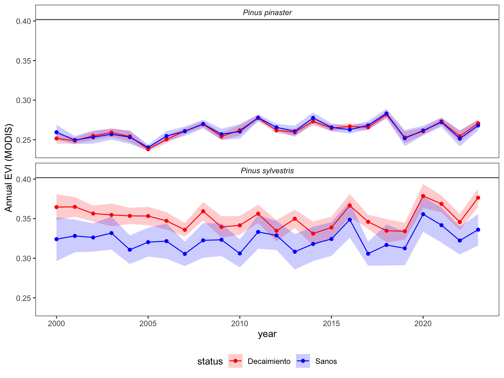

library(tidyverse)
library(Kendall)
library(trend)
library(kableExtra)
options(tidyverse.quiet = TRUE)Temporal analysis of IV
Aims
To explore the temporal evolution of several spectral indices for forest stands with tree mortality comparing with control forest stands.
Two species: Pinus sylvestris and P. pinaster
Two sites; Valdemaqueda (pinaster) and Valsaín (sylvestris)
Spectral product used:
- Landsat: several collections. We used the harmonized product. Spatial resolution = 30 m; temporal range: 1985-2023; temporal resolution = varies according to product used. More info.
- Sentinel2: spatial resolution = 10-20 m; temporal range: 2017-2023; temporal resolution = 25 days
- MODIS MOD13Q1: spatial resolution = 250 m; temporal range: 2000-2023; temporal resolution = 23 days
Prepare Data
- All the data were obtained using GEE
- We applied several filters to remove low quality data (avoid clouds, etc)
raw_landsat <- read_csv("data/raw/guadarrama_pinaster_syl_landsat_c02.csv")
raw_modis <- read_csv("data/raw/guadarrama_pinaster_syl_modis_mod13q1.csv")
pixel_id <- read_csv("data/geoinfo/pixel_idtree.csv")Landsat
raw_landsat <- read_csv("data/raw/guadarrama_pinaster_syl_landsat_c02.csv") |>
rename(evi = EVI, ndvi = NDVI) |>
mutate(date = as.Date(as.character(date), format="%Y%m%d")) |>
mutate(date = as.Date(date, format = "%Y%m%d")) |>
dplyr::select(evi, ndvi, date, sp, status, name) |>
mutate(year = lubridate::year(date),
month = lubridate::month(date)) |>
dplyr::filter(!(name %in% c("S01", "S02", "S03", "S04", "S05", "S06")))EVI
landsat_evi <- raw_landsat |>
dplyr::select(-ndvi) |>
filter(!is.na(evi)) |>
rename(value=evi) |>
mutate(iv="evi")
landsat_evi_id <- landsat_evi |> inner_join(pixel_id) |>
dplyr::select(-pixel_sentinel, -pixel_modis)
landsat_evi_yearly <- landsat_evi_id |>
group_by(sp, status, year) |>
summarise(mean = mean(value, na.rm = TRUE),
sd = sd(value, na.rm = TRUE),
se = sd/sqrt(length(value)),
n = length(value))colores_status <- c("Decaimiento" = "red",
"Sanos" ="blue")
landsat_evi_yearly |>
ggplot(aes(x = year, y = mean, fill=status, colour=status)) +
geom_line() +
geom_ribbon(data=landsat_evi_yearly,
aes(ymin = (mean - se), ymax=(mean+se)), colour=NA, alpha=.2) +
theme_bw() +
facet_wrap(~sp, ncol = 1) +
scale_x_continuous(limits = c(1986, 2023), breaks = seq(1986,2023, by=4)) +
theme(
panel.grid = element_blank(),
strip.text = element_text(face = "italic"),
strip.background = element_rect(fill = "white"),
legend.position = "bottom"
) +
ylab("Annual EVI (Landsat)") +
scale_fill_manual(values = colores_status)
- Temporal trend
| sp | status | mean_tau | mean_pvalue_mk | mean_senslope | mean_pvalue_sen |
|---|---|---|---|---|---|
| Pinus pinaster | Decaimiento | 0.568 | 0e+00 | 0.00124 | 0e+00 |
| Sanos | 0.547 | 0e+00 | 0.00133 | 0e+00 | |
| Pinus sylvestris | Decaimiento | 0.447 | 7e-05 | 0.00125 | 1e-04 |
| Sanos | 0.541 | 0e+00 | 0.00227 | 0e+00 |
NDVI
landsat_ndvi <- raw_landsat |>
dplyr::select(-evi) |>
filter(!is.na(ndvi)) |>
rename(value=ndvi) |>
mutate(iv="ndvi")
landsat_ndvi_id <- landsat_ndvi |> inner_join(pixel_id) |>
dplyr::select(-pixel_sentinel, -pixel_modis)
landsat_ndvi_yearly <- landsat_ndvi_id |>
group_by(sp, status, year) |>
summarise(mean = mean(value, na.rm = TRUE),
sd = sd(value, na.rm = TRUE),
se = sd/sqrt(length(value)),
n = length(value))landsat_ndvi_yearly |>
ggplot(aes(x = year, y = mean, fill=status, colour=status)) +
geom_line() +
geom_ribbon(aes(ymin = (mean - se), ymax=(mean+se)), colour=NA, alpha=.2) +
theme_bw() +
facet_wrap(~sp, ncol = 1) +
scale_x_continuous(limits = c(1986, 2023), breaks = seq(1986,2023, by=4)) +
theme(
panel.grid = element_blank(),
strip.text = element_text(face = "italic"),
strip.background = element_rect(fill = "white"),
legend.position = "bottom"
) +
ylab("Annual NDVI (Landsat)") +
scale_fill_manual(values = colores_status)- Temporal trend
| sp | status | mean_tau | mean_pvalue_mk | mean_senslope | mean_pvalue_sen |
|---|---|---|---|---|---|
| Pinus pinaster | Decaimiento | 0.633 | 0 | 0.00299 | 0 |
| Sanos | 0.525 | 0 | 0.00286 | 0 | |
| Pinus sylvestris | Decaimiento | 0.549 | 0 | 0.00211 | 0 |
| Sanos | 0.676 | 0 | 0.00506 | 0 |
Sentinel
- see this paper for some indexes used
raw_sentinel <- read_csv("data/raw/guadarrama_pinaster_syl_sentinel_harmonized.csv") |>
mutate(date = as.Date(as.character(substr(`system:index`, 1,8)), format="%Y%m%d")) |>
mutate(year = lubridate::year(date),
month = lubridate::month(date)) |>
dplyr::select(-`system:index`,-`.geo`, -ele, -numero, -tipo) |>
filter(!is.na(EVI)) |>
janitor::clean_names()
sentinel <- raw_sentinel |>
pivot_longer(evi:vig, names_to = "iv", values_to = "value") |>
dplyr::filter(!(name %in% c("S01", "S02", "S03", "S04", "S05", "S06")))
sentinel_date <-
sentinel |>
filter(date > as.Date("2017-06-01")) |>
mutate(date2 = as.Date(paste0(format(date, "%Y-%m"), "-01"), format = "%Y-%m-%d")) |>
group_by(sp, status, date2, iv) |>
summarise(mean = mean(value, na.rm = TRUE),
sd = sd(value, na.rm = TRUE),
se = sd/sqrt(length(value)),
n = length(value)) |>
ungroup()NDVI
sentinel_date |>
# filter(iv %in% c('savi','evi','ndvi','nbr')) |>
filter(iv == "ndvi") |>
filter(!(date2 == "2018-05-01" & sp == "Pinus sylvestris" & status == "Sanos")) |>
ggplot(aes(x = date2, y = mean, fill=status, colour=status, group = status)) +
geom_line() +
geom_ribbon(aes(ymin = (mean - se), ymax=(mean+se)), colour=NA, alpha=.2) +
theme_bw() +
facet_wrap(~sp, ncol=1) + theme(
panel.grid = element_blank(),
strip.text = element_text(face = "italic"),
strip.background = element_rect(fill = "white"),
legend.position = "bottom"
) +
ylab("NDVI (Sentinel)") +
scale_fill_manual(values = colores_status) +
scale_x_date(date_breaks = "6 months", date_labels = "%Y-%m") +
xlab("Date") +
scale_y_continuous(breaks = c(0, 0.25,0.5,0.75))
EVI
sentinel_date |>
# filter(iv %in% c('savi','evi','ndvi','nbr')) |>
filter(iv == "evi") |>
filter(!(date2 == "2019-11-01" & sp == "Pinus sylvestris" & status == "Sanos")) |>
filter(!(date2 == "2018-05-01" & sp == "Pinus sylvestris" & status == "Decaimiento")) |>
ggplot(aes(x = date2, y = mean, fill=status, colour=status, group = status)) +
geom_line() +
geom_ribbon(aes(ymin = (mean - se), ymax=(mean+se)), colour=NA, alpha=.2) +
theme_bw() +
facet_wrap(~sp, ncol=1) + theme(
panel.grid = element_blank(),
strip.text = element_text(face = "italic"),
strip.background = element_rect(fill = "white"),
legend.position = "bottom"
) +
ylab("EVI (Sentinel)") +
scale_fill_manual(values = colores_status) +
scale_x_date(date_breaks = "6 months", date_labels = "%Y-%m") +
xlab("Date")
NBR
sentinel_date |>
# filter(iv %in% c('savi','evi','ndvi','nbr')) |>
filter(iv == "nbr") |>
filter(!(date2 == "2018-05-01" & sp == "Pinus sylvestris" & status == "Sanos")) |>
ggplot(aes(x = date2, y = mean, fill=status, colour=status, group = status)) +
geom_line() +
geom_ribbon(aes(ymin = (mean - se), ymax=(mean+se)), colour=NA, alpha=.2) +
theme_bw() +
facet_wrap(~sp, ncol=1) + theme(
panel.grid = element_blank(),
strip.text = element_text(face = "italic"),
strip.background = element_rect(fill = "white"),
legend.position = "bottom"
) +
ylab("NBR (Sentinel)") +
scale_fill_manual(values = colores_status) +
scale_x_date(date_breaks = "6 months", date_labels = "%Y-%m") +
xlab("Date")
MODIS
modis <- raw_modis |>
mutate(date = as.Date(str_replace_all(substr(`system:index`, 1, 10), "_", "-"),
format = "%Y-%m-%d"),
evi = EVI*0.0001,
ndvi = NDVI*0.0001) |>
dplyr::filter(!(name %in% c("S01", "S02", "S03", "S04", "S05", "S06"))) |>
dplyr::select(sp, status, date, evi, ndvi) |>
unique()
df_modis <- modis |>
pivot_longer(evi:ndvi,
names_to = "iv",
values_to = "value")
df_modis_date <- df_modis |>
mutate(year = lubridate::year(date)) |>
group_by(sp, status, year, iv) |>
summarise(mean = mean(value, na.rm = TRUE),
sd = sd(value, na.rm = TRUE),
se = sd/sqrt(length(value)),
cv = sd/mean*100,
n = length(value))colores_status <- c("Decaimiento" = "red",
"Sanos" ="blue")
df_modis_date |>
filter(iv == "evi") |>
ggplot(aes(x=year, y=mean, fill=status, colour=status, group=status)) +
geom_ribbon(aes(ymin = (mean - se), ymax=(mean+se)), colour=NA, alpha=.2) +
geom_point() +
geom_line() +
facet_wrap(~sp, ncol = 1) +
theme_bw() +
theme(
panel.grid = element_blank(),
strip.text = element_text(face = "italic"),
strip.background = element_rect(fill = "white"),
legend.position = "bottom"
) +
ylab("Annual EVI (MODIS)") +
scale_fill_manual(values = colores_status) +
scale_colour_manual(values = colores_status)
#| fig-width: 10
#| fig-height: 6
df_modis_date |>
filter(iv == "ndvi") |>
ggplot(aes(x=year, y=mean, fill=status, colour=status, group=status)) +
geom_ribbon(aes(ymin = (mean - se), ymax=(mean+se)), colour=NA, alpha=.2) +
geom_point() +
geom_line() +
facet_wrap(~sp, ncol = 1) +
theme_bw() +
theme(
panel.grid = element_blank(),
strip.text = element_text(face = "italic"),
strip.background = element_rect(fill = "white"),
legend.position = "bottom"
) +
ylab("Annual NDVI (MODIS)") +
scale_fill_manual(values = colores_status) +
scale_colour_manual(values = colores_status)